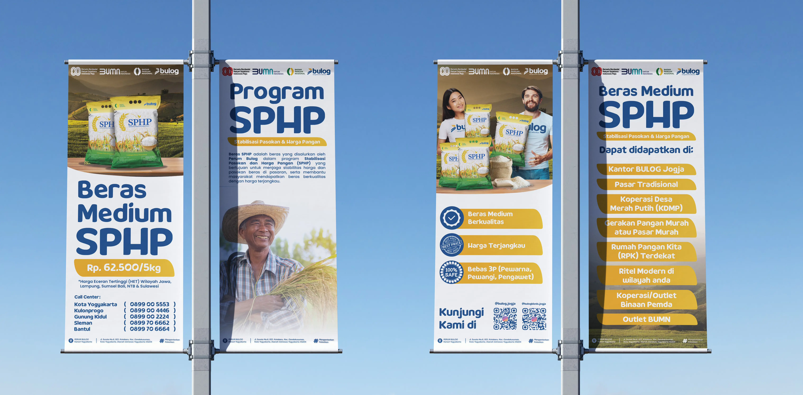
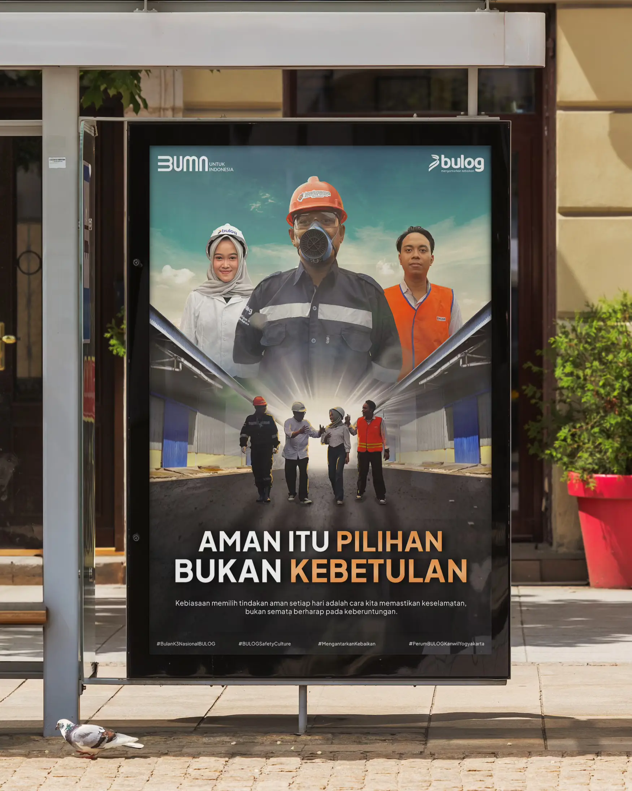
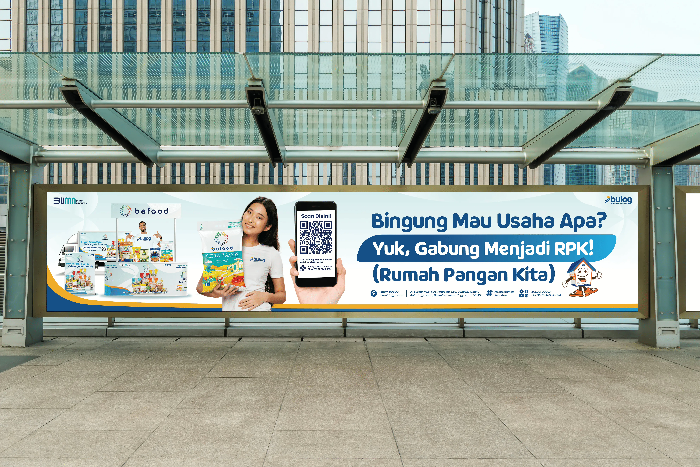
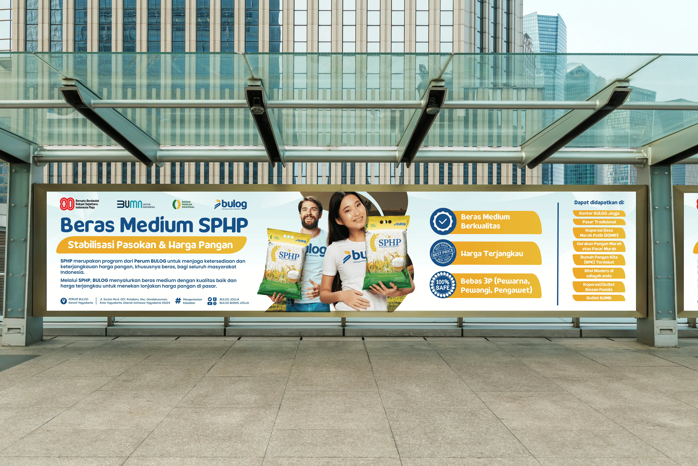

Multimedia Design & Branding
Branding & Komunikasi Digital Perum BULOG
Ikhtisar Proyek
Sebagai bagian dari program Magenta BUMN, saya berkontribusi dalam memperkuat identitas visual Perum BULOG melalui konten multimedia kreatif. Fokus utama adalah pada kampanye digital dan optimasi media sosial.
Tantangan Desain
Menjaga konsistensi branding sesuai dengan visual guideline nasional BULOG sambil tetap menghadirkan nuansa lokal yang relevan untuk audiens di wilayah Yogyakarta.
Hasil & Dampak
Meningkatkan engagement media sosial melalui aset visual yang lebih modern dan dinamis. Menyelesaikan proyek dengan predikat Nilai A (Sangat Memuaskan) dari manajemen.
Teknologi yang Digunakan
Social Media


Printed Media



